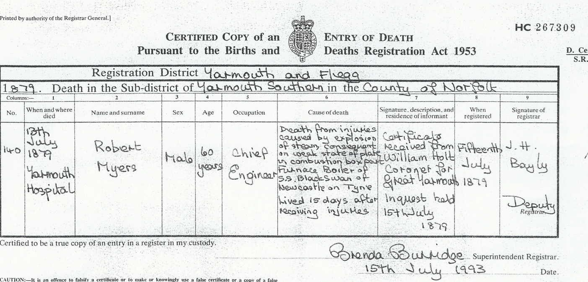
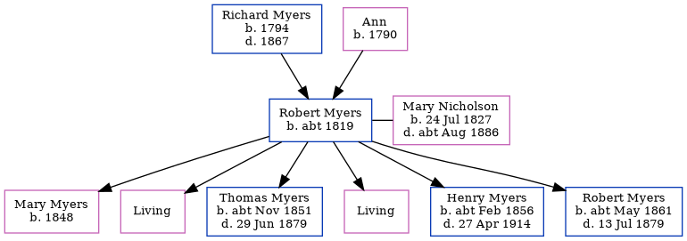

Robert Myers c1819 -
[ Home ] | [ Calendar ] | [ Surnames Index ] | [ Errors ] | [ Family History ]An engine man and the child of Richard Myers (a coal miner) and Ann, Robert Myers was born in Redcar, Yorkshire, England c. 18191,2 and married Mary Nicholson (with whom he had 6 children: Mary, Isabella J N, Thomas Nicholson, Ann, Henry Briscoe Nicholson and Robert, along with 2 surviving children) at St Hilda's Church, South Shields, Tyne and Wear, England on 9 May 18473. On 30 Mar 1851, he was living at Quay, Tynemouth, Tyne and Wear1.
Parents
- Richard was born in 1794
- Ann was born in 1790
Children
- Mary was born in 1848
- Thomas Nicholson was born c. Nov 1851
- Henry Briscoe Nicholson was born c. Feb 1856
- Robert was born c. May 1861
Citations
- 1851 England, Wales & Scotland Census - Findmypast (was age 29 and the head of the household)
- England & Wales deaths 1837-2007 - Findmypast
- England Marriages 1538-1973 - Findmypast
Media
Robert Myers Mary Ann Nicholson - Marriage Certifi

Robert Myers - Death Certificate

England Marriages 1538-1973 - R_855397328
England Marriages 1538-1973 - R_848638324
England & Wales marriages 1837-2005 - BMD/M/1847/2/HZ/000427/026
Northumberland and Durham Marriages - GBPRS/M/356116375/1
1851 England, Wales & Scotland Census - GBC/1851/0016315235
British armed forces and overseas deaths and burials - BMD/D/MARITIME/732880
Family Tree
Map
Generated by ged2site. Last updated on Jul 3, 2024
Known Issues
Can't find relationship with the home person